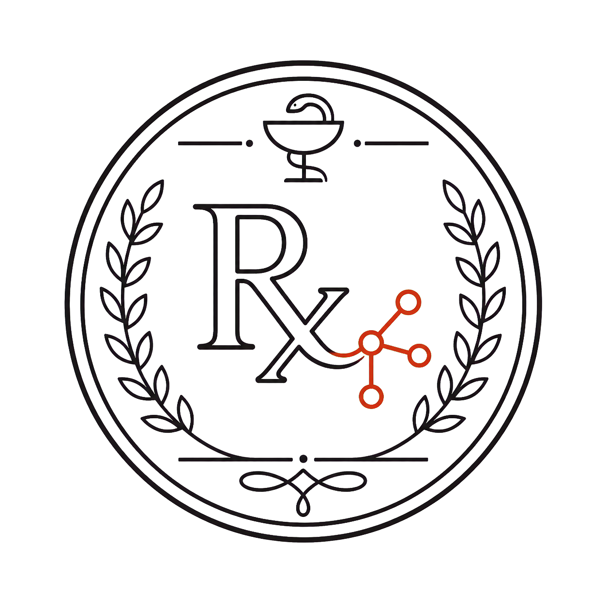
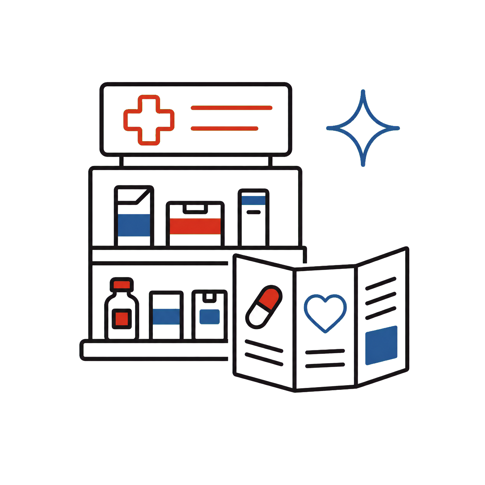
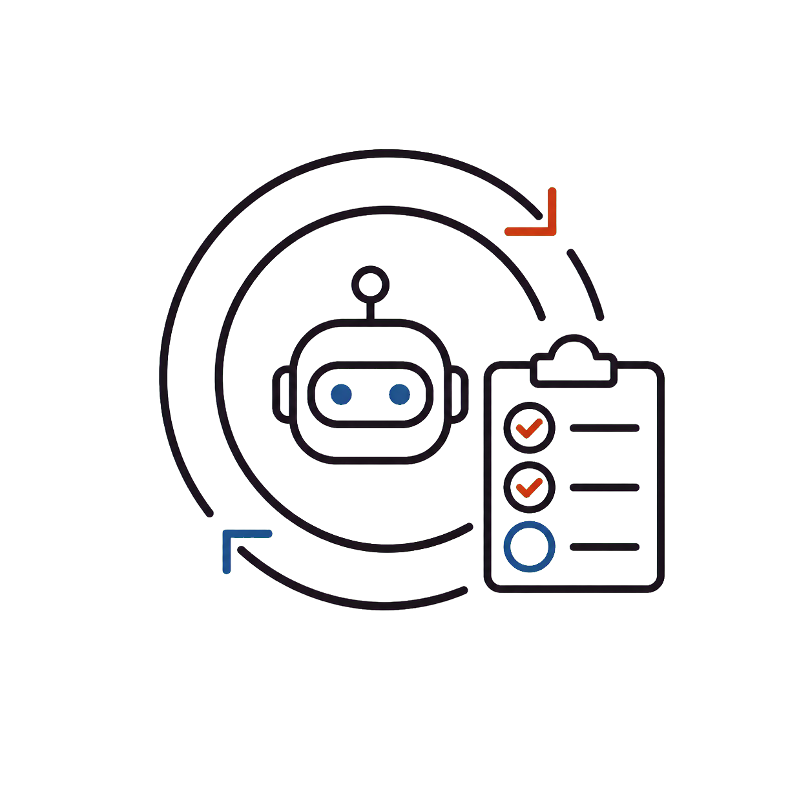
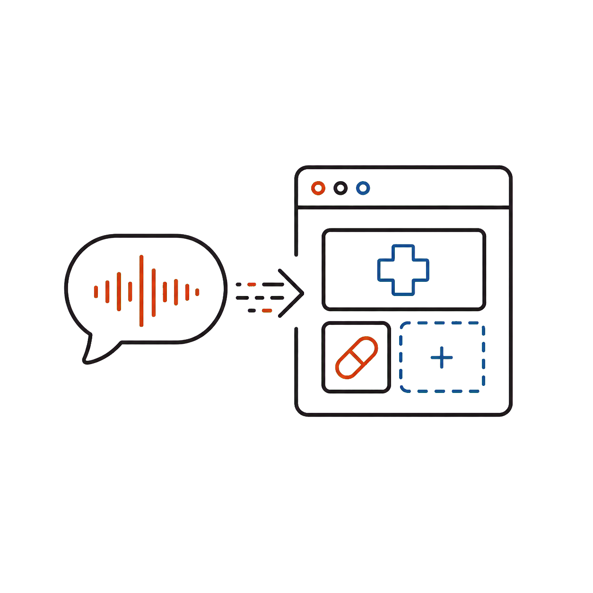

[ 약사 전용 ]| 단계 | 처 방 의 약 품 (교육 과정) | 난이도 | 용 법 |
|---|---|---|---|
|
 01 |
AI 활용 — POP · 복약안내문 · 환자설명자료
말 몇 마디로 30초 완성
|
★☆☆ | 오늘 당장 |
|
 02 |
에이전트 — 환자 FAQ · 상담 스크립트 · 문서/엑셀
반복 업무를 AI에게 위임
|
★★☆ | 매주 실습 |
|
 03 |
바이브코딩 — 재고 · 유효기간 · 환자관리 도구
코드 몰라도 말로 직접 제작 → 인터넷 배포까지
|
★★★ | 직접 만들기 |
일주일은 168시간.
그중
딱 12시간이면, 당신도 도구를
만드는 약사가 됩니다.
8주 15만원 · 소수 선발 · 신청서를 먼저 받고, 선발되면 개별 안내드립니다
신청 시 받는 정보는 커뮤니티 운영과 강의 안내에만 사용됩니다.